정보통신산업기사 (2017-03-05 기출문제)
1과목: 디지털전자회로
1. RC 평활회로에서 시정수 RC = 1이고 5[V]의 구형펄스를 입력했을 때 커패시턴스의 방전 시 파형으로 맞는 것은?
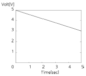
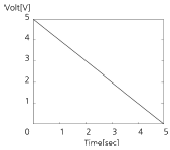
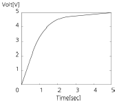
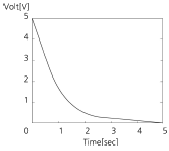
(정답률: 79%)

2. 다음 중 초크입력형 평활회로의 특징에 대한 설명으로 틀린 것은?
- 출력직류전압이 낮다.
- 전압변동률이 적다.
- 첨두 역전압이 높다.
- 부하저항이 적을수록 맥동이 적다.
(정답률: 60%)
3. 크로스오버(Cross Over) 일그러짐은 어떤 증폭방식에서 발생하는가?
- A급
- B급
- AB급
- C급
(정답률: 66%)
4. 다음 그림의 회로에 대한 선형동작을 위한 교류 콜렉터(Collector) 전류의 최대 변동값 Ic(p-p)(Peak to Peak)은 얼마인가? (단, 베이스-이미터 전압 VBE= 0으로 가정한다.)
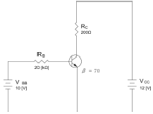
- 20[mA]
- 50[mA]
- 60[mA]
- 70[mA]
(정답률: 53%)
5. 다음 중 이미터 플로워(Emitter Follower)의 특징이 아닌 것은?
- 입력 임피던스가 높다.
- 출력 임피던스가 낮다.
- 전압 이득이 1에 가깝다.
- 전류 이득이 1에 가깝다.
(정답률: 60%)
6. 다음 중 무궤환시 회로와 비교해서 부궤환시 증폭기의 일반적 특성이 아닌 것은?
- 부하변동에 의한 이득 변동이 감소한다.
- 저역 차단주파수가 증가한다.
- 이득이 감소한다.
- 일그러짐과 잡음이 감소한다.
(정답률: 51%)
7. 다음 중 수정발진기의 주파수 안정도가 양호한 이유로 틀린 것은?
- 수정진동자의 Q(Quality Factor)가 높다.
- 발진을 만족하는 유도성 주파수 범위가 매우 좁다.
- 수정진동자는 항온조 내에 둔다.
- 부하변동을 전혀 받지 않는다.
(정답률: 65%)
8. 다음 중 발진기에서 이용되는 궤환회로로 옳은 것은?
- 정궤환회로
- 부궤환회로
- 정궤환과 부궤환 모두 사용한다.
- 궤환회로를 사용하지 않는다.
(정답률: 71%)
9. 다음 중 교류 신호를 구성하는 기본적인 요소가 아닌 것은?
- 진폭
- 주파수
- 증폭도
- 위상
(정답률: 75%)
10. 다음 중 콜렉터 변조 회로의 특징으로 틀린 것은?
- 직선성이 우수하다.
- 피변조파의 동작점을 C급으로 한다.
- 100[%] 변조가 가능하다.
- 소전력 송신기에 매우 적합하다.
(정답률: 60%)
11. 다음 중 설명과 같은 특징을 갖는 변조방식은 어느 것인가?
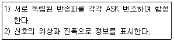
- BPSK
- DPSK
- QAM
- QPSK
(정답률: 82%)
12. 다음 중 펄스변조방식이 아닌 것은?
- 펄스진폭변조(PAM)
- 펄스폭변조(PWM)
- 펄스수변조(PNM)
- 펄스반응변조(PRM)
(정답률: 68%)
13. 다음 중 슈미트 트리거(Schmitt Trigger)의 출력 파형으로 적합한 것은?
- 구형파
- 램프파
- 톱니파
- 정현파
(정답률: 64%)
14. 다음 중 저역통과 RC 회로에서 시정수(Time Constant)에 대한 설명으로 옳은 것은?
- 출력신호 최종값의 50[%]에 도달할 때까지의 입력신호에 대한 응답 상승속도
- 출력신호 최종값의 63.2[%]에 도달할 때까지의 입력신호에 대한 응답 상승속도
- 출력신호 최종값의 76.5[%]에 도달할 때까지의 입력신호에 대한 응답 상승속도
- 출력신호 최종값의 81.2[%]에 도달할 때까지의 입력신호에 대한 응답 상승속도
(정답률: 67%)
15. 논리식
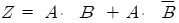
를 단순화한 것은?- Z = A
- Z =

- Z = B
- Z =

(정답률: 76%)
16. 다음의 카르노 맵을 간략화한 논리식으로 옳은 것은?
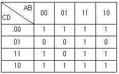
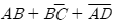
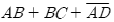
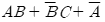
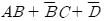
(정답률: 62%)
17. 16진수 (2AE)16을 8진수로 변환하면?
- (257)8
- (1256)8
- (2557)8
- (4317)8
(정답률: 71%)
18. 다음은 디지털시계의 블록 다이어그램이다. 괄호 안에 들어갈 알맞은 항목은 무엇인가?
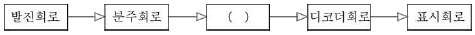
- 플립플롭 회로
- 카운터 회로
- 증폭 회로
- 드라이브 회로
(정답률: 74%)
19. 다음 중 비동기식 계수기에 관한 설명으로 틀린 것은?
- Ripple Counter는 비동기식 계수기이다.
- 전단의 출력이 다음 단의 트리거로 작용한다.
- 각 단의 지연이 거의 없어 반응이 비교적 빠른 계수기이다.
- 상향 또는 하향으로 설계할 수 있다.
(정답률: 52%)
20. 다음 중 레지스터의 기능으로 옳은 것은?
- 펄스 방생기이다.
- 카운터의 대용으로 쓰인다.
- 회로를 동기시킨다.
- 데이터를 일시 저장한다.
(정답률: 82%)
2과목: 정보통신기기
21. 다음 정보 단말기의 기능 중 성격이 다른 것은?
- 입ㆍ출력 기능
- 에러 제어 기능
- 입ㆍ출력 제어 기능
- 송ㆍ수신 제어 기능
(정답률: 72%)
22. 다음 중 VDSL 방식에서 가입자의 컴퓨터가 인터넷에 접속하는 방식으로 알맞은 것은?
- IP를 자동으로 할당하는 DHCP 방식
- 별도의 PPPoE(외장형 모뎀), PPPoA(내장형 모뎀) 접속 프로그램을 이용하여 인증을 통하여 접속
- NMS를 통하여 자동으로 할당하는 방식
- EMS를 통하여 고정 IP를 할당받는 방식
(정답률: 64%)
23. 다음 중 정보통신시스템의 구성 분류에서 정보 전송시스템에 해당되지 않는 것은?
- 통신회선
- 변복조장치
- 통신제어장치
- 중앙처리장치
(정답률: 72%)
24. DSU가 필요한 데이터 전송방식의 특징과 가장 거리가 먼 것은?
- 전송하고자 하는 비트열을 그대로 전송한다.
- 회선용량이 크다.
- 각종 전송신호의 왜곡이 최소화된다.
- 반송파 주파수를 사용한다.
(정답률: 60%)
25. 다음 중 다중화 방식의 종류가 아닌 것은?
- 주파수 분할 다중화
- 진폭 분할 다중화
- 시분할 다중화
- 코드 분할 다중화
(정답률: 59%)
26. 고속회선을 저속장치들이 공유하는 집중화기의 종류가 아닌 것은?
- 메시지 교환 집중화기
- 패킷 교환 집중화기
- 데이터 교환 집중화기
- 회선 교환 집중화기
(정답률: 46%)
27. 다음 중 비동기 전송방식인 ATM에 대한 설명으로 틀린 것은?
- 다양한 종류의 트래픽을 통합할 수 있다.
- 가변길이의 셀을 교환한다.
- 통계적 다중화방식(STDM)에 의한 효율적인 대역폭의 사용이 가능하다.
- 셀은 5바이트의 헤더와 48바이트의 페이로드로 구성된다.
(정답률: 64%)
28. 다음 중 OSI 7 계층과 네트워크 기기 간의 연결이 올바른 것은?
- 전송 계층 - 리피터
- 네트워크 계층 - 허브
- 데이터링크 계층 - 브리지
- 물리 계층 - 라우터
(정답률: 80%)
29. 다음 중 회선교환방식에 대한 설명으로 가장 적합한 것은?
- 통신정보를 패킷 단위로 교환한다.
- 속도와 코드 변환이 있다.
- 가상회선방식이 존재한다.
- 회선을 점유하고 통신한다.
(정답률: 68%)
30. 다음 중 Network Layer을 지원하는 이더넷 스위치는 어떤 장비인가?
- L2 Switch
- L3 Switch
- L4 Switch
- L7 Switch
(정답률: 63%)
31. 다음 중 전화기의 기능과 구성으로 적합하지 않는 것은?
- 통화상태와 신호상태를 분리하는 것은 훅(hook) 스위치이다.
- 전화에 사용되는 주파수 대역은 국제적으로 300~3400[Hz]이다.
- 수화기는 전기에너지를 음성에너지로 바꾸어주는 장치로서 진동관은 자유진동이 커야 한다.
- 송화기는 음성에너지를 전기에너지로 바꾸어주는 장치이다.
(정답률: 68%)
32. 다음 중 G3 FAX에 대한 설명이 아닌 것은?
- 디지털 전송방식을 사용한다.
- PM 또는 FM 변조방식을 사용한다.
- 전송제어절차는 권고 T.30에 규정되어 있다.
- 전송 시 MH 또는 MR 방식을 이용하여 데이터를 압축 전송한다.
(정답률: 61%)
33. 다음 중 화상응답 시스템(VRS)의 특징에 대한 설명으로 옳지 않은 것은?
- 동영상이 아닌 그림과 문자만을 서비스한다.
- 센터와 단말장치 사이에 광대역의 전송로를 사용한다.
- 화면정지, 다시보기, 앞으로 가기, 뒤로 가기 등 자유자재로 다양한 화면상태의 표현이 가능하다.
- 방송정보와 같이 단방향이 아닌 양방향 정보를 제공한다.
(정답률: 83%)
34. 다음 중 무선통신설비에 있어서 어떤 원인으로 전기설비 계통에 문제가 생겨 전위상승이 생겼을 때를 대비하여 취하는 조치는 어느 것인가?
- 무선설비의 접지
- 전원용량을 높임
- 전원계통에 평활회로 부착
- 전원계통의 수시 방전
(정답률: 63%)
35. 100[mW]의 신호 전력을 [dBm]으로 환산하면 얼마인가?
- 10[dBm]
- 20[dBm]
- 30[dBm]
- 40[dBm]
(정답률: 63%)
36. 다음 중 차세대 이동통신망의 특징이 아닌 것은?
- All IP
- All Optic
- BroadBand
- Low Speed Data
(정답률: 84%)
37. 이동통신용 단말기의 사용 파장이 0.1[m]라면 주파수는 얼마인가?
- 3[MHz]
- 3[GHz]
- 30[GHz]
- 300[GHz]
(정답률: 76%)
38. 샤논의 통신용량 공식에서 통신용량은 대역폭에 몇 배 비례하는가?
- 1배
- 4.5배
- 2배
- 3배
(정답률: 79%)
39. VOD(Video On Demand) 시스템의 구성 중 전체 시스템의 리소스를 조정하고 운영하는 시스템의 중앙 처리부를 담당하는 구간은?
- Pumping 부
- 전송부
- 사용자부
- Main Control 부
(정답률: 73%)
40. 다음 중 디지털 TV 방송의 특성에 대한 설명으로 틀린 것은?
- 영상 및 음향신호의 압축이 용이하고 녹화 재생 시에 화질이나 음질의 열화가 적다.
- 다양한 멀티미디어의 양방향 서비스가 가능하다.
- 오류정정 기술을 사용하고 저장 및 복제에 따른 손실이 적다.
- 상호간섭이 비교적 많고 신호의 열화가 완만하다.
(정답률: 77%)
3과목: 정보전송개론
41. T1 전송시스템은 한 프레임 당 125[s] 시간 동안 총 24채널을 다중화 한다. 이 때 전송로 상의 전송속도는 얼마인가?
- 1.544[Mbps]
- 2.048[Mbps]
- 6.312[Mbps]
- 1.536[Mbps]
(정답률: 73%)
42. 주파수대역폭이 fd[Hz]이고 통신로의 채널용량이 6fd[bps]인 통신로에서 필요한 S/N비는?
- 15
- 31
- 63
- 127
(정답률: 74%)
43. 다음 중 나이퀴스트(Nyquist) 표본화 주기는 어느 것인가?
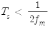
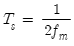
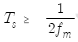
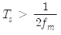
(정답률: 65%)
44. 다음의 그림과 같이 신호공간 다이어그램으로 표현되는 변조 방식은?
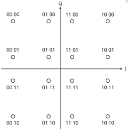
- 8진 DFSK
- 16진 PSK
- 16진 QAM
- 8진 QAM
(정답률: 74%)
45. 동축 케이블에서 부하를 단락했을 때 입력 임피던스가 200[Ω] 부하를 개방했을 때 입력 임피던스가 200[Ω]일 때 케이블의 특성 임피던스는?
- 400[Ω]
- 200[Ω]
- 100[Ω]
- 20[Ω]
(정답률: 70%)
46. 동축 케이블과 광케이블의 혼합망으로 방송국에서 원거리까지 광케이블을 이용하여 전송하고 광단국에서 가입자까지는 동축 케이블을 이용한 망은?
- FTTH
- FTTO
- HCO
- HFC
(정답률: 56%)
47. 광섬유 케이블에서 발생하는 접속 손실의 원인이 아닌 것은?
- 광섬유 심선 접속 부위의 간격
- 광섬유 심선 단면의 경사
- 광섬유 Core의 직경 및 모양의 상이
- 관로의 재질과 모양
(정답률: 80%)
48. 광섬유 기반의 광통신 시스템에서 전송 거리를 제한하는 가장 중요한 원인은 어느 것인가?
- 광 손실
- 광 분산
- 광 전반사
- 광 굴절
(정답률: 76%)
49. 한 번에 한 문자씩 전송하며, Start bit와 Stop bit를 두어 문자와 문자를 구분하는 데이터 전송 방식은?
- 직렬 전송 방식
- 병렬 전송 방식
- 비동기식 전송 방식
- 동기식 전송 방식
(정답률: 75%)
50. 통화로 신호방식(Channel Associated Signaling)에서 1개 또는 다수의 신호주파수를 음성주파수 대역내에 두는 방식으로 주파수 이용효율이 좋은 반면 통신신호와의 간섭에 대한 처리가 필요한 방식은?
- 직류 방식
- In-band 방식
- Out-of-band 방식
- 혼합 방식
(정답률: 65%)
51. 기저대역(Baseband) 전송방식에서 다음 그림의 전송방식으로 올바른 것은?
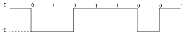
- 바이폴라 RZ 방식
- AMI 방식
- 차분(Differential) 방식
- CMI 방식
(정답률: 69%)
52. 데이터를 변조하지 않은 상태, 즉 직류펄스의 형태 그대로 전송하는 방식으로 RZ, NRZ, AMI(Bipolar), Manchester, CMI 등의 방식이 사용되는 전송방식은?
- 동기식 전송방식
- 비동기식 전송방식
- 기저대역 전송방식
- 반송대역 전송방식
(정답률: 71%)
53. OSI 계층에서 통신망 연결에 필요한 데이터 교환 기능의 제공 및 관리를 규정하는 계층으로서 네트워크 연결관리, 경로 설정 등의 기능을 수행하는 계층은?
- 데이터링크 계층
- 네트워크 계층
- 전송 계층
- 세션 계층
(정답률: 76%)
54. OSI 7계층에서 하위 3계층에서 발생한 데이터 분실 등의 오류를 회복시키는 계층은?
- 네트워크 계층
- 트랜스포트 계층
- 세션 계층
- 데이터링크 계층
(정답률: 64%)
55. 다음 보기는 OSI 7계층을 나타낸 것이다. 하위 계층부터 상위 계층 순서대로 나열한 것은?
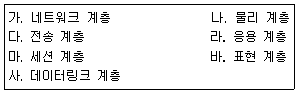
- 나 ⇒ 사 ⇒ 가 ⇒ 다 ⇒ 마 ⇒ 라 ⇒ 바
- 나 ⇒ 사 ⇒ 다 ⇒ 가 ⇒ 마 ⇒ 바 ⇒ 라
- 나 ⇒ 사 ⇒ 가 ⇒ 다 ⇒ 마 ⇒ 바 ⇒ 라
- 나 ⇒ 사 ⇒ 다 ⇒ 가 ⇒ 바 ⇒ 마 ⇒ 라
(정답률: 74%)
56. 다음 중 IPv6가 지원하는 주소 유형이 아닌 것은?
- 유니 캐스트
- 멀티 캐스트
- 브로드 캐스트
- 애니 캐스트
(정답률: 64%)
57. IPv4에서 Class C의 경우 IP 주소 범위를 바르게 나타낸 것은?
- 0.0.0.0 - 127.255.255.255
- 128.0.0.0 - 191.255.255.255
- 192.0.0.0 - 223.255.255.255
- 224.0.0.0 - 239.255.255.255
(정답률: 78%)
58. Class C 네트워크 200.13.94.0의 서브넷 마스크가 255.255.255.0 일 경우 사용 가능한 최대 호스트 수는 몇 개인가?
- 30
- 62
- 126
- 254
(정답률: 69%)
59. 입력되는 정보 마지막에 1[bit]를 추가하여 추가된 Bit로 에러를 검사하는 것을 무엇이라고 하는가?
- ASCII
- Parity Check
- CRC
- ARQ
(정답률: 81%)
60. 다음 중 오류 검사 방식으로 사용되지 않는 것은?
- 허프만 코드
- 해밍 코드
- CRC
- 군 계수 검사코드
(정답률: 61%)
4과목: 전자계산기일반 및 정보설비기준
61. 10진수의 산술연산은 팩형식(Pack Decimal)의 데이터에 대하여 행하며, 필드의 길이는 16바이트까지 지정할 수 있는데 10진수의 최대 자리수는?
- 15자리
- 16자리
- 31자리
- 32자리
(정답률: 54%)
62. 다음 중 ROM과 RAM의 차이점을 설명한 것으로 틀린 것은?
- RAM은 휘발성 메모리라고 한다.
- EEPROM은 한 번 쓰면 지울 수 없다.
- RAM은 동적 RAM과 정적 RAM으로 나눌 수 있다.
- ROM의 종류에는 EPROM, EEPROM, PROM 등이 있다.
(정답률: 80%)
63. 다음 중 사진 및 그 외의 자료로부터 이미지를 읽어 들이는 장치는?
- 키보드
- 스캐너
- 마우스
- 광학 문자 판독기(OCR)
(정답률: 77%)
64. 병렬 컴퓨터에서 컴퓨터의 속도를 향상시키기 위한 기술 중에 Super Scalar을 설명한 것은?
- 한 명령어를 실행하는 과정을 여러 단계로 나누어 실행하는 기술
- 파이프 라이닝을 여러 개 두고 병행 실행하는 기술
- 명령을 그룹화하여 한 번에 여러 개 명령을 동시에 처리하는 기술
- 동시수행가능 명령어를 컴파일 수준에서 하나로 압축하는 기술
(정답률: 55%)
65. 정보 데이터 비트가 4비트 1011 일 때 짝수 패리티 비트의 전체 해밍코드는? (단, 왼쪽 비트가 1번째 비트이다.)
- 0110011
- 1001001
- 0100101
- 1011010
(정답률: 37%)
66. 다음 중 어셈블리 언어(Assembly Language)의 특징이 아닌 것은?
- 어려운 기계어 명령들을 쉬운 기호로 표현된다.
- 어셈블리 언어로 작성된 프로그램은 하드웨어에 종속적이다.
- 기계어에 비해 프로그래밍하기 쉽다.
- 하드웨어에 직접 접근할 수 없다.
(정답률: 68%)
67. 다음 중 주소 지정방식에 대한 설명으로 틀린 것은?
- 직접 주소 지정방식보다 간접 주소 지정의 주소 범위가 더 넓다.
- 간접 주소 지정방식은 두 번 이상 메모리에 접속해야 실제 데이터를 가져온다.
- 레지스터 간접 주소 지정방식에서 레지스터 안에 있는 값은 실제 데이터 주소이다.
- 즉시(또는 즉치) 주소 지정방식에서 오퍼랜드는 기억장치의 주소 값이다.
(정답률: 50%)
68. 다음 중 스케줄링에 대한 설명으로 틀린 것은? (문제 오류로 실제 시험에서는 3, 4번이 정답처리 되었습니다. 여기서는 4번을 누르면 정답 처리 됩니다.)
- 컴퓨터 시스템을 구성하고 있는 주기억장치, 입출력장치, 처리시간 등의 시스템 자원을 언제 배분할 것인가를 결정한다.
- 처리 능력의 최대 응답시간, 변환 시간, 대기 시간의 단축 예측이 가능해야 한다.
- 여러 개의 CPU가 공동으로 하나의 일을 수행하는 경우에 전체로서 그 일의 실행시간을 최단으로 하도록 제어한다.
- 동적 스케줄링은 각 태스크를 프로세서에게 할당하고 실행되는 순서가 사용자의 알고리즘에 따르거나 컴파일할 때에 컴파일러에 의해 결정되는 스케줄링이다.
(정답률: 67%)
69. 다음 Process Scheduling 정책 중 남은 시간이 가장 짧은 JOB을 우선적으로 처리하는 방식은?
- FIFO
- SJF
- HRN
- SRT
(정답률: 58%)
70. 다음 중 C 언어의 특징에 대한 설명으로 틀린 것은? (문제 오류로 실제 시험에서는 3, 4번이 정답처리 되었습니다. 여기서는 3번을 누르면 정답 처리 됩니다.)
- 어셈블리어와 연계되는 언어이다.
- 강력하고 융통성이 많다.
- UNIX 체제에서는 사용할 수 없다.
- 객체지향성 언어이다.
(정답률: 83%)
71. 다음 중 방송통신설비의 기술기준에 관한 규정으로 잘못 설명된 것은?
- “특고압”이란 6,000볼트를 초과하는 전압을 말한다.
- “선로설비란 일정한 형태의 방송통신콘텐츠를 전송하기 위하여 사용하는 동선ㆍ광섬유 등의 전송매체로 제작된 선조ㆍ케이블 등과 전주ㆍ관로ㆍ통신터널ㆍ배관ㆍ맨홀ㆍ핸드홀ㆍ배선반 등과 그 부대설비를 말한다.
- “전력유도”란 전철시설 또는 전기공작물 등이 그 주위에 있는 방송통신설비에 정전유도나 전자유도 등으로 인한 전압이 발생되도록 하는 현상을 말한다.
- 국선단자함“이란 국선과 구내간선케이블 또는 구내케이블을 종단하여 상호 연결하는 통신용 분배함을 말한다.
(정답률: 74%)
72. 사업자의 교환설비로부터 이용자방송통신설비의 최초 단자에 이르기까지의 사이에 구성되는 회선을 무엇이라 하는가?
- 내선
- 국선
- 통신선
- 중계선
(정답률: 73%)
73. 다음에서 정의하는 것은 무엇인가?
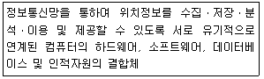
- 위치추적시스템
- 위치제공시스템
- 위치기반시스템
- 위치정보시스템
(정답률: 72%)
74. 다음 중 도급받은 공사의 일부에 대하여 수급인이 제3자와 체결하는 계약을 무엇이라고 하는가?
- 하수급
- 하도급
- 제3 도급
- 재하청
(정답률: 67%)
75. 다음 중 정보통신설비의 설치 및 유지, 보수에 관한 공사의 범위에 속하지 않는 것은?
- 전기통신 관계법령 및 전기설비 공사업에 의한 전기설비공사
- 방송법 및 방송관계 법령에 의한 방송설비공사
- 수전설비를 제외한 정보통신 전용 전기시설 설비공사
- 정보통신설비를 이용하여 정보를 제어, 저장 및 처리하는 정보설비공사
(정답률: 54%)
76. 다음 중 별정통신사업에 대한 사항으로 옳지 않은 것은?
- 별정통신사업을 하려는 사람은 정보통신망에 의해 국토교통부장관에게 등록하여야 한다.
- 별정통신사업자가 되기 위해서는 재정 및 기술적 능력을 갖추어야 한다.
- 별정통신사업자는 등록한 날로부터 1년 이내에 사업을 시작해야 한다.
- 별정통신사업자의 등록은 법인만 할 수 있다.
(정답률: 62%)
77. 다음 중 공사업자가 품위 유지, 기술 향상, 공사시공 방법의 개량 및 기타 공사업의 건전한 발전을 위하여 미래창조과학부 장관의 인가를 받아 설립한 기구는?
- 정보통신공사협회
- 정보통신공제조합
- 한국정보통신산업협회
- 한국정보통신기술협회
(정답률: 53%)
78. 전기통신사업자가 전기통신역무를 제공할 때의 의무사항이 아닌 것은?
- 정당한 사유 없이 역무제공을 거부해서는 아니 된다.
- 사업자는 업무 처리시 공평하고 신속하게 하여야 한다.
- 역무의 요금결정은 합리적으로 결정되어야 한다.
- 보편적 역무제공을 위한 부가통신역무를 제공하여야 한다.
(정답률: 67%)
79. 다음 중 구내에 전기통신설비를 설치하거나 이를 이용하여 구내에서 전기통신역무를 제공하는 사업은?
- 구내통신사업
- 별정통신사업
- 부가통신사업
- 기간통신사업
(정답률: 46%)
80. 평형회선은 회선 상호 간 방송통신콘텐츠의 내용이 혼입되지 않도록 두 회선 사이의 근단누화 또는 원단누화의 감쇠량을 얼마 이상으로 유지하여야 하는가?
- 68[dB]
- 70[dB]
- 72[dB]
- 74[dB]
(정답률: 78%)